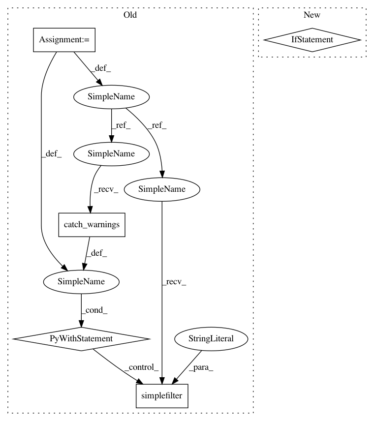

b8904ac33f1f480f451762cdede8d66f6195763a,inferno/trainers/basic.py,Trainer,wrap_batch,#Trainer#Any#Any#Any#Any#,1164
Before Change
if thu.is_tensor(_batch):
// This supresses the volatile deprecated warning
// TODO remove after Pytorch 1.0
with warnings.catch_warnings():
warnings.simplefilter("ignore")
variable_batch.append(Variable(_batch, requires_grad=requires_grad,
volatile=volatile))
elif pyu.is_listlike(_batch):
// This supresses the volatile deprecated warning
// TODO remove after Pytorch 1.0
with warnings.catch_warnings():
After Change
RuntimeError)
// Get number of targets
num_inputs = loader_spec["num_inputs"]
if num_inputs is None:
num_inputs = len(batch) - loader_spec["num_targets"]
// Fetch input batches and send"em to device (leave the targets alone)
inputs = batch[:num_inputs]
inputs = self.to_device(inputs)
// Finally, build the batch
batch = inputs + batch[num_inputs:]
In pattern: SUPERPATTERN
Frequency: 4
Non-data size: 5
Instances
Project Name: inferno-pytorch/inferno
Commit Name: b8904ac33f1f480f451762cdede8d66f6195763a
Time: 2019-05-26
Author: valentyna.zinchenko@embl.de
File Name: inferno/trainers/basic.py
Class Name: Trainer
Method Name: wrap_batch
Project Name: ageitgey/face_recognition
Commit Name: c261b64d51ef8f55ad04f7b09cad7da9deacafef
Time: 2018-02-27
Author: ageitgey@gmail.com
File Name: face_recognition/cli.py
Class Name:
Method Name: test_image
Project Name: NeuromorphicProcessorProject/snn_toolbox
Commit Name: 104d77214ea82e4811432b5b075e66c4c9223862
Time: 2016-05-12
Author: bodo.rueckauer@gmail.com
File Name: snntoolbox/core/conversion.py
Class Name:
Method Name: convert_to_SNN_keras
Project Name: inferno-pytorch/inferno
Commit Name: b8904ac33f1f480f451762cdede8d66f6195763a
Time: 2019-05-26
Author: valentyna.zinchenko@embl.de
File Name: inferno/trainers/basic.py
Class Name: Trainer
Method Name: wrap_batch
Project Name: etal/cnvkit
Commit Name: e4d2308740b9e99a0b7313a31072684cb224d2b4
Time: 2016-08-24
Author: eric.talevich@gmail.com
File Name: cnvlib/smoothing.py
Class Name:
Method Name: rolling_median